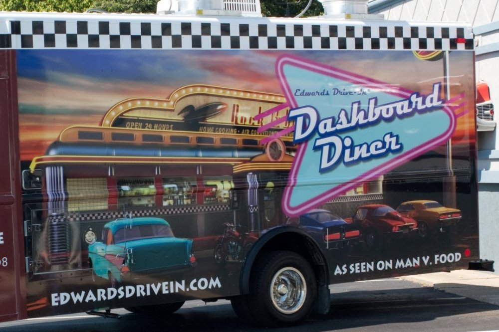
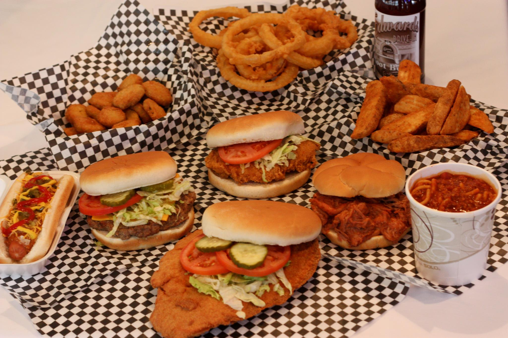
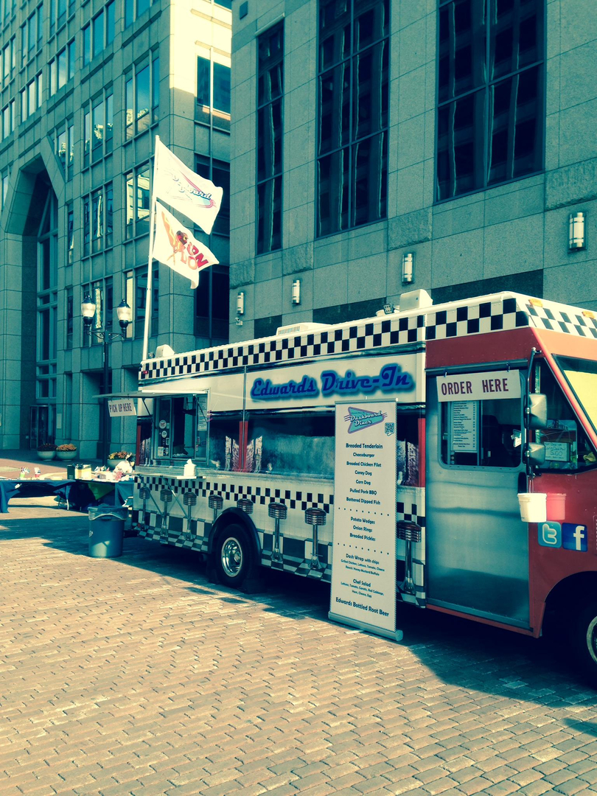

Let us cater to you!
Have the Dashboard Diner at your next event.
Classic Drive-In food
We offer the drive in classic of the 50's. Place an order with us here.
Dashboard Diner Menu
Take a look at our offerings.
Past Events
Take a look at some past events